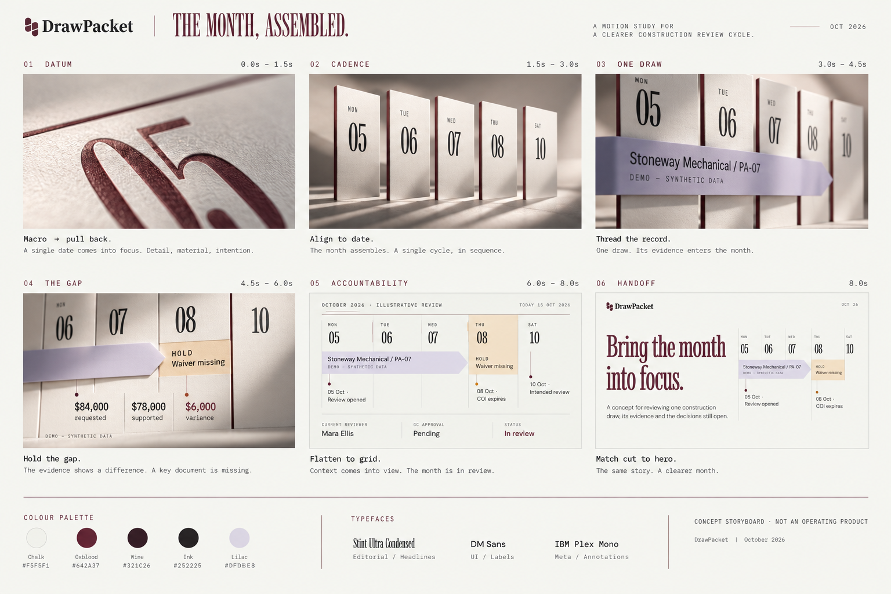
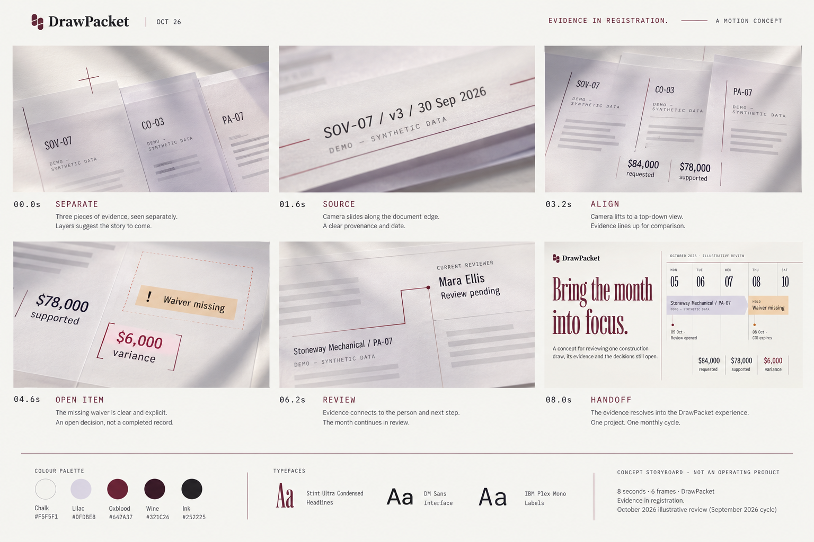
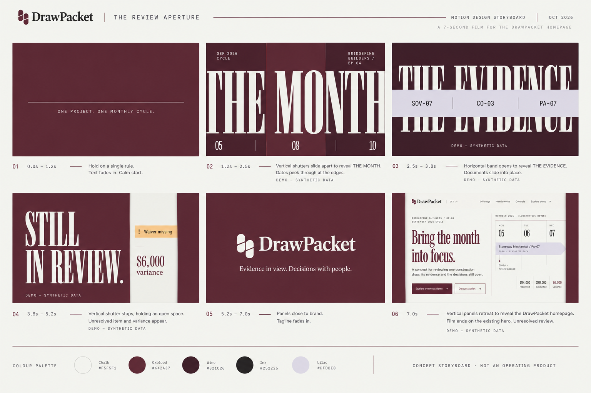

Creative research
Creative researchBring the month
into motion.
Three original directions for a short intro above the existing homepage hero. Each introduces the monthly draw, its evidence and the decision still with a person.
Recommendation: The Month, Assembled. It makes the approved calendar into a memorable three-dimensional brand object, then returns naturally to the current website. Evidence in Registration is quieter; The Review Aperture is the boldest typographic treatment.
Motion with a clear subject.
I inspected MotionSites’ public gallery, its background collection, an Atelier Unit preview, and two published tutorial prompts. Perplexity’s research supplied source leads; the observations below were checked on the official site.
| Public source | Observed or documented | Original DrawPacket adaptation |
|---|---|---|
| Animated Backgrounds | The visible collection mixes miniature environments, architectural scenes, macro materials, abstract forms and landscapes. The first three loaded video elements reported approximately 8–12 seconds. Several other media previews were unavailable. | Use one deliberate visual subject, depth and directional light. A calendar or evidence surface gives the film a subject specific to DrawPacket. |
| Atelier Unit | The visible preview combines an oversized three-line headline with a cinematic central subject and fine structural rules. Full motion and copied prompt content were not verified. | Let typography dominate selected beats. Maintain fine rules and generous space. Do not borrow its figure, lighting arc or artwork. |
| Layered hero tutorial | The public detailed prompt specifies background, title, supporting text and foreground image layers, with the foreground overlapping the type. It describes restrained scroll parallax. The page’s introduction names a different example from its embedded real-estate prompt. | Use occlusion: calendar planes or evidence strips pass in front of and behind the type. Separate title movement from the visual surface. |
| Sticky video tutorial | The public prompt separates a viewport-height video from editable foreground content and describes a lower gradient into the next surface. | Design the final frame and website handoff together. Use an exact chalk match and aligned objects instead of an arbitrary video cut. |
The Month, Assembled
A date becomes a structure. A record enters it. An unresolved gap brings the month into focus.

Visual language
Thin chalk calendar planes with oxblood edges, restrained lilac ribbon and long soft shadows. Begin close enough to see the printed rule, then pull back to reveal the review dates. The setting is an abstract editorial studio with no desk props or construction stock footage.
Why it fits
The calendar already anchors the homepage. Giving it depth establishes a recognizable DrawPacket object and turns the intro into the opening of the same story. The principal risk is excess miniature-model detail; keep surfaces quiet and labels sparse.
Macro view of 05 and a fine oxblood rule. A controlled pullback starts immediately.
05, 06, 07, 08 and 10 slide onto a baseline, with a short stagger and no bounce.
The PA-07 ribbon threads across the dates. Label the record synthetic.
Hold on $84,000 requested, $78,000 supported and $6,000 variance. Missing waiver stays visible.
Camera becomes frontal. Mara Ellis and GC approval pending appear; nothing is released.
Flatten the planes to the existing calendar grid and hand off to the live headline.
Original motion prompt: An editorial architectural calendar on a chalk cyclorama. Begin with a macro oxblood date, pull back as five thin date planes align, then thread one lilac record ribbon through them. Let a visible gap interrupt the ribbon. Settle into a frontal ledger composition, preserving an unresolved human review. Measured ease-out, soft side light, no particle effects, no payment-success imagery.
Evidence in Registration
Separate documents find a common baseline. The missing evidence stays visibly missing.

Visual language
Translucent chalk and lilac sheets, oxblood registration marks, precise ledger lines and soft lateral light. A low oblique camera moves into a top-down view. The material feels finely made without introducing a manila-folder theme.
Story and timing
0–1.6s: separate SOV, change order and pay application. 1.6–3.2s: source/version/date close-up. 3.2–4.6s: baselines align for comparison. 4.6–6.2s: empty waiver outline and $6,000 variance. 6.2–7.2s: reviewer takes visual ownership. 7.2–8s: sheets flatten into the hero.
Trade-off: This communicates evidence provenance well, but feels less distinctive than the approved calendar. Avoid tiny legal text and unreadable translucent labels; typeset essential facts sharply above the material layer.
Original motion prompt: Three translucent evidence planes on a chalk drafting surface, slightly offset. A lateral camera move reveals source identifiers before lifting overhead. Align ledger baselines precisely. Leave the waiver position empty; show an amber hold label and oxblood variance bracket. Connect the evidence to a named pending reviewer, then resolve the planes into the website composition. No automatic completion or signature.
The Review Aperture
The month. The evidence. The open decision. Three deliberate reveals, then the website opens.

Visual language
Full-frame wine and oxblood fields, monumental chalk type, lilac horizontal bands and asymmetric openings. Use the brand kit’s opposing shutter movement at cinematic scale. This route is graphic and direct, with minimal material or camera simulation.
Story and timing
0–1.2s: a rule and one-cycle line. 1.2–2.5s: vertical shutters reveal the month. 2.5–3.8s: a horizontal evidence band. 3.8–5.2s: an aperture holds on the unresolved item. 5.2–6.2s: original Cadence mark and wordmark. 6.2–7s: shutters retract onto the current chalk hero.
Trade-off: This has the strongest opening contrast and should be the simplest to reproduce precisely with the current website motion stack. Large shutters need restrained speed and no flashing or mandatory playback gate.
Original motion prompt: A precise typographic title sequence in oxblood, chalk and lilac. Begin with one datum line. Opposing masks reveal monumental narrow type in three beats: the month, the evidence, still in review. Preserve one open vertical gap as a missing-evidence metaphor. Resolve the approved DrawPacket wordmark, then retreat the masks to reveal the existing homepage. Clean geometry, no glow, no elastic overshoot.
One film. One continuous story.
Website placement
A full-width opening scene immediately before the existing hero. Play once when visible; keep a clear “Skip intro” control from the first frame. The scene is an opening chapter, not a loading screen. Scrolling may leave it at any point; never lock input to finish the film.
At completion, hold the final composition. On continuation, align the calendar and background with the live hero. Use responsive DOM/SVG overlays for the final match instead of baking a miniature website into the video. No forced scroll or replay on every route change.
Motion and framing
Target 8 seconds for the first two directions and 7 for the third, at 30fps. Use deliberate acceleration, staggered arrivals and a readable hold at the discrepancy. Keep the camera path to one pullback or one lateral movement; avoid spins and whip pans.
Compose separate 1920×1080 desktop and 1080×1350 mobile versions. Mobile shows fewer simultaneous dates, stacked amount labels and a clear hold; do not center-crop the full desktop calendar.
| Production decision | Specification |
|---|---|
| Text and brand | Use the existing Cadence SVG and current website fonts: Stint Ultra Condensed, DM Sans and IBM Plex Mono. Generated storyboard lettering, tiny captions and logo rendering are approximate references, not final assets. |
| Source of truth | PA-07 / Stoneway Mechanical / Bridgepine Builders BP-04. September 2026 cycle. Illustrative October review. $84,000 requested − $78,000 supported = $6,000 variance. Lower-tier conditional waiver missing, COI expires 08 Oct, review open, GC approval pending. |
| Disclosure | Carry DEMO — SYNTHETIC DATA inside every frame with records. Keep CONCEPT PREVIEW available around the film. Do not imply approval, signature, payment or statutory determination through an animation. |
| Rendering approach | For the selected direction, author a deterministic motion composition with exact vector and text overlays; render the standalone video from that composition. Prefer the existing GSAP/SVG approach for website shutters and the final live handoff. Material footage, if generated, is a background layer only. |
| Playback | Muted, inline, non-looping. Pause when offscreen. An explicit replay control may restart it. Audio is unnecessary; any later sound version must be optional. |
| Fallbacks | Reduced motion uses a static poster with the same message and an immediate route to the hero. Autoplay failure leaves a usable poster and play control. The homepage is usable without the video loading. |
| Delivery budget | Proposed target: compressed desktop video below 4MB and mobile below 2MB, with an optimized still poster. These are production targets to verify after rendering, not measured file sizes. |
| Acceptance | Verify date/amount consistency, high text contrast, all disclosure labels, exact logo, mobile safe framing, skip/replay keyboard access, reduced motion and no layout jump. Final handoff must not show the following chapter prematurely. |
Selection recommendation: Build direction 01 as the main opening. It expresses DrawPacket’s existing identity most clearly. Choose direction 03 if a faster, primarily typographic brand introduction matters more than dimensional material detail.